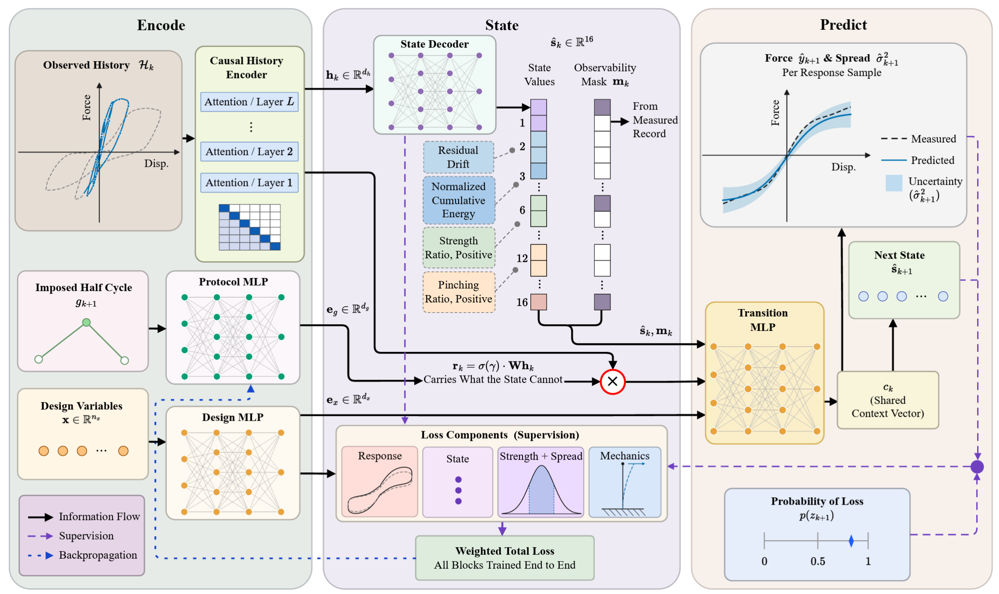

Structural digital twins update the condition of a reinforced concrete (RC) structure from measured response and then predict its subsequent response, so their reliability depends on how the prior loading is represented. Current practice replaces that history with a compact damage state, yet whether such a state preserves its predictive information has never been measured, and models learned from one database are rarely tested on another. Therefore, this study formulates loading history sufficiency as a next half-cycle prediction problem and proposes the gated state transition operator (GSTO), an interpretable model that maps the observed response to engineering state variables. These variables are then combined with member properties and the prescribed half cycle to predict the force trajectory, the state evolution, the probability of strength loss, and the response uncertainty. The model was evaluated on an independent test dataset of 1272 transitions, which was held out entirely from model development. Under a prespecified noninferiority margin of 0.02, the state alone is favored over the same formulation augmented with raw history. An explicit engineering state therefore supports response prediction, uncertainty quantification, and fragility assessment that transfer to unseen laboratories.

Architecture of GSTO. The observed history is encoded, decoded into an explicit engineering state with an observability mask, and combined with the member properties and the commanded half cycle to predict the response, the next state, the response spread, and the probability of strength loss.
M1. Causal history encoder. A masked attention encoder maps the displacement and force samples that occur strictly before the transition to a history embedding $\mathbf{h}_k$, so no future information enters the prediction.
M2. Supervised engineering state. A state decoder maps $\mathbf{h}_k$ to sixteen named quantities, among them residual drift, normalized cumulative energy, strength ratios, unloading and reloading stiffness ratios, and pinching measures. Each component is supervised against its measured counterpart and carries an observability mask, so an unobserved value is distinguished from a measured zero.
M3. Gated residual route. A gated channel $\mathbf{r}_k = \sigma(\gamma) \odot \mathbf{W}\mathbf{h}_k$ carries whatever the state cannot. The gate is free to close, so the reliance of the trained model on the raw record is measured instead of assumed.
M4. Protocol encoder. The commanded next half cycle is known in advance, so a separate encoder models it together with the thirteen member properties.
M5. Four predicted quantities. From one shared context vector the transition module predicts the force trajectory, the updated state, the response variance, and the probability of a declared loss of strength condition, with the first predicted force tied to the last observed force.
M6. Calibrated uncertainty and fragility. Cross-program conformal calibration gives an empirical coverage of 0.977 at a nominal level of 0.90, and the calibrated probability follows the observed frequency of strength loss across bands of peak imposed drift with a mean absolute deviation of 0.049.
@article{wakjira2026gsto,
title = {Gated State Transition Operator for Interpretable Seismic
Response, Strength Loss, and Fragility Prediction of
Reinforced Concrete Columns},
author = {Wakjira, Tadesse G.},
journal = {Under Review},
year = {2026}
}The trained operator is provided here for evaluation of the method. The processed data format, program partitions, and analysis code will be deposited in a permanent repository with the accepted article.
Tadesse G. Wakjira, AI4RISE Lab, Department of Civil and Environmental Engineering, Kennesaw State University.